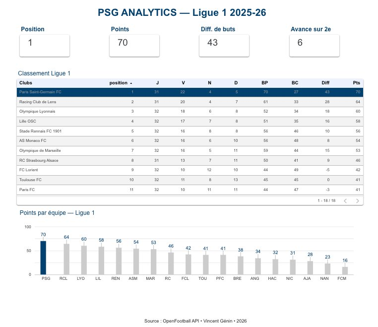
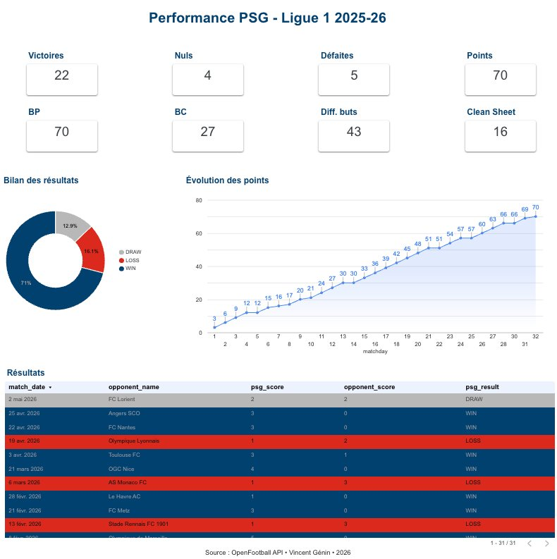
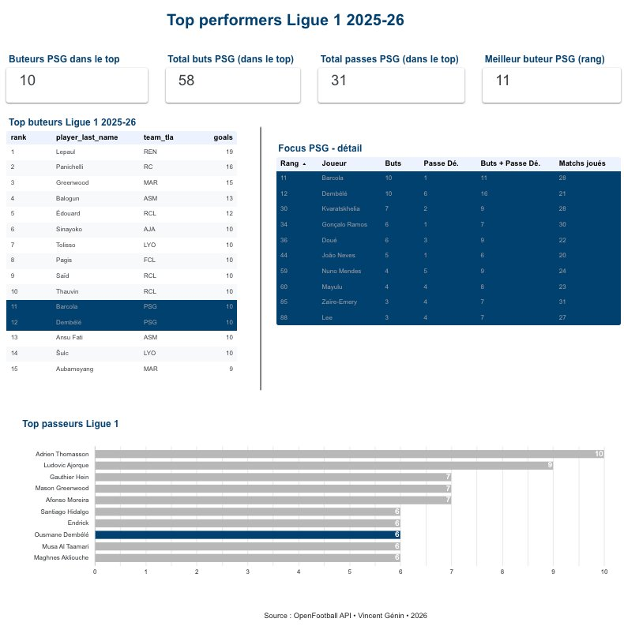

Check_Prod — IT Service Monitoring · Bouygues Telecom
Full-stack web application designed and deployed in production to automate daily IT service status monitoring.
Teams fill in the status of each service (Available / Degraded / Unavailable), review status history over a custom date range (filterable by scope or status), and send a daily report (automatically if no anomaly, manually if a service is degraded or unavailable).
→ Replaced a critical manual process · Time savings of up to 1h/day · In production across multiple teams · Improved data reliability
React
TypeScript
NestJS
Oracle SQL
MySQL
Git / GitLab
ServiceNow
Data Analysis & Operational KPIs · Bouygues Telecom
Extraction, cleaning and structuring of data from Oracle databases.
Design and maintenance of interactive dashboards in Tableau for IT service performance monitoring.
SQL
Oracle
Tableau
Power BI
DBVisualizer
🌍 CO2 Emissions per Capita · Artefact School of Data
Interactive analysis app of CO2 emissions per capita (1950–2010). Filters by period, continent and number of countries. Visualisations: top emitters ranking, world maps and trend curves. Key KPIs: top emitting country, max emissions, world average.
Python
Streamlit
pandas
Plotly



PSG Analytics — Dashboard & AI Assistant · Personal project
End-to-end data pipeline analysing PSG's performance in Ligue 1: API ingestion, BigQuery modelling with dbt, 3-page Looker Studio dashboard, and a conversational AI assistant powered by the Claude API with BigQuery tool use.
Python
BigQuery
dbt
Looker Studio
Streamlit
Claude API
Tool use